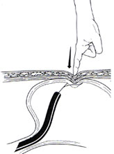
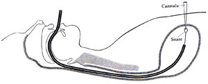
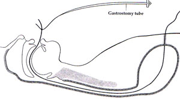
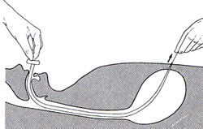

Percutaneous
Endoscopic Gastrostomy
Indications
/ Contraindications
Procedure
Complications
Feeding
PEJ
Indications
Long term nutrition
- where unable to eat but functioning GI tract
- if <30days, use an NG instead.
Contraindications
1. Absolute
- uncorrected coagulopathy
- correctabe intestinal obstruction
- peritonitis / dialysis
- gastric varices
2. Relative
- ascites (has been successful with aggressive medical management &
paracentesis first)
- morbid obesity.
3. Caution
- prior surgery (safe if meticulous transillumination; ensure only air
aspirated from stomach on advancement)
- distended bowel loops
- ventriculoperitoneal shunt
- severe cardiac disease (safe in >1mo after MI if stable &
essential).
Procedure
Prep
NBM 8 hrs.
Cefazolin for Staph and Beta-haemolytic strep.
Position supine, head elevated, suction on hand.
Monitoring.
The Pull Technique.
Sedation
Prep and drape abdomen.
Lights down, transilluminate abdo wall to find safe strike passage.
Finger pressure should produce clear indentation on gastric wall.

Advance syringe with local, withdrawing.
- passage of air into barrell and appearance of needle into stomach
should occur simultaneously.
- else a hollow viscus may have been perforated.
Make a 1cm incision on the abdo wall.
Thrust the cannula through the incision
- pass the wire through into the lumen
- the endoscopist should snare it.

The wire is pulled from the mouth, and the drainage end of the
gastrostomy tube is attached to the wire.

Pull is begun, moving the tube down the oesophagus.
- follow with the gastroscope to ensure good positioning.

Ensure the drainage end is not
tight against the abdomen.
- should be relaxed at both skin and gastric ends.
- look how many cms tube is at when ideally placed with gastroscope
still in.
- then when fixing to skin, ensure it stays at that mark.
Complications
Mortality 1%, major complications 3%, minor 13%.
1. Wound infection
- 30% of minor complications are wound infections.
- commonly staph aureus & B-haemolytic strep.
- single shot cefazolin covers 72% organisms, reduces rate from 28.6%
to 7.4% (Jain et al).
- excessive tension of the bolster risks abdo wall necrosis &
serious infection (should be loose contact only, place dressings over
the bolster, not under).
- making an adequate skin incision allows bacterial egress; safer.
2. Extrusion of feeding tube head
- buried bumper syndrome where head leaves gastric lumen, passing into
subcut tissue.
- usually due to excessive tension; should be loose contact at skin and
gastric mucosa only, with no tension.
3. Leakage
- again excessive tension is usually the cause; separation of gastric
and abdominal walls follows necrosis.
- evaluate via peg-o-gram (instillation of contrast via PEG followed by
radiology.
- if the contrast study shows the head remains in the stomach, pulling
on the tube (a bit more tension) may seal the leak, then place on free
drainage, IVFs, ABs.
- if the head has left the stomach, pull from the abdo wall, insert an
NG (effect gastric drainage) and start IVFs, ABs.
- exploratory laparotomy and repair if patient worsens.
4. Inadvertant pulling out of tube by
patient
- if it occurs within 2 weeks from insertion, treat as for head leaving
the stomach above.
5. Gastrocolic fistula
- when colon punctured at gastrostomy, or pinched, resulting in
ischaemic necrosis.
- results in severe diarrhoea after feeding at a few weeks
- documented with upper GI series / Ba enema
- remove gastrostomy, fistula usually closes rapidly.
6. Progressive stomal enlargement
- possibly excess tension, nutrition contributes.
- don't replace with a larger tube or it will happen again
- remove, allow closure, then insert a smaller tube, minimising
movement by close securement to skin.
7. Pneumoperitoneum
- air can last up to 5wks beyond routine placement.
- in the absence of sepsis / peritonism, ignore; may need study to
exclude leakage.
8. Neoplastic seeding to skin
- not a huge issue if setting is palliative
- may be advantage to introducer technique here, unproven.
Feeding
Intermittent feeding preferred: easier, tolerated and physiologic.
Avoid rapid bolus feeds
- decrease LOS pressures to incompetent, cause GORD.
- gravity feed over 30-60 mins, pt semirecumbent.
Most start at 24hrs with water at 50mL/hr
- once tolerated for 4hrs, use normal feed at 50mL/hr.
- increase at 25mL/hr every 12 hrs until goal rate achieved.
- this is anecdotal and probably can be sped up significantly.
Residual volumes can be checked: if >100mL, concern for intolerance,
should not cease feeds though until proven to be successive.
Aspiration
Important complication.
Less in PEG than NG.
- possibly less still from PEJ.
- PEJ unnecessary unless definite GORD after PEG.
PEJ
Indicated for aspiration, GORD, gastroparesis, or insufficient stomach
for PEG.
A longer tube is placed through a PEG, then grasped and placed into
duodenum.
Confirm placement with XR.
20% long term failure rate.
References
Yamada 4th Edn.